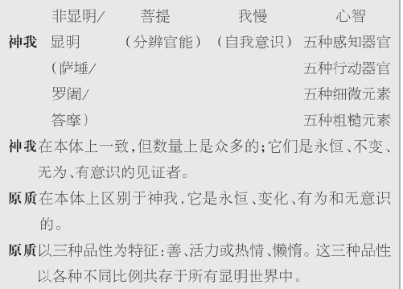

自印度传统习俗的很早阶段始，人们就从事着各种各样的精神锻炼或冥想训练，这就是经常被人们通称为“瑜伽”的训练。婆罗门教最早提到瑜伽这一词是在《奥义书》中，但我们几乎可以肯定，即使在那时书中所反映出的瑜伽修行也已经发展了相当长的一段时间。随着时间的推移，人们修行了很多不同种类的瑜伽，但它们却都共同内含着一个基本原则。Yoga（瑜伽的英文）来源于梵文动词词根“yuj”，意为“上轭”——用轭把某物与另一物套在一起。这里多指其“融合”或“结合”之意：或者是自我∕灵魂（真我）与宇宙本质（梵）相融合，或者是有神论体系中的灵魂与上帝的结合。这个词也常指内部控制、协调、秩序或可被称为“洞见的完整”的相关概念。总的本体论因体系的不同而有所不同，但其内含的共同原则是，日常生活是以我们的感觉“带来的偏离”或忙乱的日常认知活动产生的误导为特征的，因此，修行瑜伽的目的就在于实现控制、冷静，并在某些系统中获得认知性领悟。
被称为《瑜伽经》的经文中体现了“古典瑜伽”的诸见。通常人们将此归功于一位叫帕坦伽利的人，而事实上我们并不知道经文的作者，总之叫帕坦伽利的人就有好几位（其中包括第四章所提到的声明学家）。《瑜伽经》是在综合吸纳的基础上形成的一种瑜伽方法体系。实际上，此经的主要目的似乎就在于阐述方式，而经文所涉及的内含和所依附的本体论，仅是为了证明方法论的合理性或详述方法的目的与结构。当涉及类似的问题和细节时，经文实际上没有提到其他思想体系：如果古典瑜伽的倡导者们与其他人有过什么论辩，那么这些交锋在此经中则都无记载。《瑜伽经》首先是一部修行手册，它的各种标准和简明陈述无疑是从长期的修行传统中而不是在论辩中形成的。瑜伽修行者对冥想的洞见要比对抽象的哲学概念更加感兴趣，而修行功效比说服他人也更为重要。这种见解也许比其他任何观点都更能证明，印度“哲学”是以救世为目标和目的的印度传统的一个组成部分。
年代表
约公元前2000年——：吠陀祭祀传统。
约公元前800—公元前500年：早期《奥义书》。
公元前500年前：婆罗门传统中崇礼派与灵智派两教派分支并存。
公元前5世纪社会背景：隐修者和居家修行者。
约公元前485—公元前405年：佛陀在世。
公元前4世纪——公元前2世纪：声明学家（即文法学家）和早期注经家建立了何物当受“审视”的评判标准。
公元前3世纪——公元前2世纪：胜论派与正理派把多元唯实论的本体论和用以获得一定知识的常规方法结合起来。
公元前4世纪——公元前1世纪：不同佛教派别的出现。
公元前3世纪——公元2世纪：佛教阿毗达摩派的发展。
公元前1世纪——公元1世纪：大乘佛教和早期《般若波罗密经》（“般若”）的出现。
约公元2世纪：龙树的中观学派聚焦于万象之“空性”。
约公元4世纪：大乘佛教之瑜伽行派以精神过程为中心。
公元3世纪：《瑜伽经》代表了我们所知的“古典瑜伽”，据说此经由一位叫做帕坦伽利的人所写，但事实上究竟谁是作者还不确定。《瑜伽经》详细地提出了获得自由洞见的精神训练方法论，这种方法论与数论派的二元本体论是一致的。
公元4—5世纪：自在黑在其《数论颂》中编纂了古典僧佉论。人类必然会重生是因为他们没有意识到自己认为有意识的东西都是无意识的，而那种意识从本体论上来说只存在于相互分离与无为的“自我”（puru·s a）之中。僧佉论的目的就是要洞悉这种二元论。
《瑜伽经》开篇即陈述其目标：
（《瑜伽经》1.1—2）
意识活动（citta-vrtti）有许多不同种类，大致可分为正知、谬误、分别知、睡眠和记忆五大类。获取正知的途径是知觉、推论和来自传统的证言。谬误是虚假认知，不是由真正的实相而来。分别知是仅基于抽象精神活动的认知——常常是仅以“对措辞的具体化”来认定事实，它的积极介入是将表面现象视为事实。睡眠同样也牵涉到它自身的一种精神活动，而记忆则是回溯我们曾经经历过的感知对象，更多涉及的是精神活动。通过瑜伽修行和不执（即掌控），我们终止了所有这些意识活动。诸如疾病、疑惑、粗心、懈怠、虚伪、失败和不稳定等经历与心理状态，会使人意识涣散并会阻碍意识的终止。伴随着这些阻碍的是疼痛、沮丧、四肢颤抖和呼吸困难，克服阻碍的出路则在于专注于单一对象、外向修行（即不要采取自私意义上的自我为中心）、善待他人、正确呼吸和内心平静。（此解释是《瑜伽经》1.5—22，29—35内容的释义。）
从这里我们可以看到，《瑜伽经》的作者否定了最终现实是依据我们自身对显明世界所经历的感知方式来构想安排的。精神活动通常会产生严重失常的精神涣散，导致我们远离对现实的清晰感知。瑜伽方法论的基础是力求鉴别出真正的“见证者”或“自我”［即本体系中的“神我”（purusa）］完全独立于“被见证者”或“显明”［即本体系中的“原质”（prakrti）］。在还没有获得这种分辨能力之前，每个个体都错误地·相信意识所寄身的“见证者”是显明事物的一部分。我们把自己的·显明、无意识的“自我”与我们的“更高自我”混淆了，事实上后者与前者完全不同：显明世界是无意识的，神我则是有意识的，也是无为的。正是神我与原质的“结合”带来幻觉；分辨只有在分散精力的脑力活动停止时才能实现，然后促成神我和原质的分离。这样真我才能从轮回中解脱，而由于神我与原质的结合的存在，轮回已经存在了那么久。真我（神我）是最高和“最真”的实相；实现真我也是人类可追求的至善。了解自我真实本性和个人基本神我的现实是《瑜伽经》的中心内容。虽然我们对意识存在于何处并不了解，但“古典瑜伽”中的显明世界却是真实的。原质——显明的世界——像神我一样，其本身就作为一种本体而存在，但是原质既是一个远离真实和事物“更高”状态的世界，又是一个被轮回束缚的世界。因此，瑜伽的目标就在于从原质中分辨自己。
“上帝”——“古典瑜伽”中的自在天
在《瑜伽经》1.23—8中，我们得知分辨的目的同样可以通过“虔信上帝（自在天）”来实现。据载这位上帝是“一种特殊的神我”，不受业报影响，全知全能，是古代圣人们的导师。这些章节的确切意思不是很明晰，而且学者们对这位上帝地位的看法也不尽一致：或许它/他是一位赋予“古典瑜伽”以神性的超验存在；或许这些章节所涉及的是“古典瑜伽”的方法论为有神论拥护者所追随的事实；或许自在天是一个抽象的典型；亦或这些章节是在隐喻地表明，如果个体“内省”自己，他们会发现：每一个人的神我都是他/她自己的上帝。在印度宗教传统中虔信有时可指“专注”而非“崇拜”；因此这里的表述不一定是在暗示对一位实际造物主的虔诚。
迷误的人有必要修习瑜伽，原因有二：第一，无明仅产生于显明层面；第二，正是在显明层面上分辨才会发生。在无为状态下，神我没有也不能做出什么，它的职能就是见证。
《瑜伽经》很大部分是描述性内容，有关精神的不同状态、控制精神活动的不同方法、所实现目标的不同水平以及精神活动终止或不终止的原因等。有些内容是关于体验自我的方式，既包含虚假的“有质的自我”，又包括“无质的自我”。就经文本身来看，其大多数内容是技术性的陈述，这对于那些没有过冥想状态经历的人来说几乎没有实际的意义。一位“古典瑜伽”的西方学者曾将《瑜伽经》描述为“主要是精神内在旅行过程中的修行步骤图”，这形象地表明经文主要不是展示了一种清晰的哲学或本体论立场，而是描述了对控制阻碍分辨的各种精神活动进行冥想训练的方法。
形成对照的是，“古典数论”的主要文献对本体论的阐述显然更加详尽，对获取知识手段的讨论也更清晰。《数论颂》（或《僧佉颂》）这部经文据说是由自在黑写于公元350年至450年之间。各种资料中都有明确证据表明数论派思想有着久远的早期历史，甚至可以追溯到《奥义书》时期。那时的数论派思想很可能在细节方面有些不同，而且还可能不时地与我们现在视为对该传统至关重要的经文形成对照。但是，早期的数论派经籍没有被保存下来。
梵语的“数论”（sāmkhya）一词有几种意义，但在数论派语境中的意思类似于“列举”。它是指这个派别所声称要传授的真理，是在分析和分辨的意义上、通过对构成显明世界的范畴进行列举的方式得以认识的。《数论颂》开卷即表明：“正是因为遭受痛苦，我们才渴望知道如何去克服痛苦。”在表述这一明白无误的救世目的之后，经文接着指出我们所需要的是一种能够鉴别“显明、非显明以及知晓者”的特殊的分辨性知识。随后经文在神我（数量上为复数、个体相互分离但本体上又彼此同一的众多知晓者）与原质（既显明又非显明，但数量是单一的）之间进行了本体上的区分。与“古典瑜伽”一样，数论派在这一方面也主张本体二元论：实相由神我和原质组成。在非显明状态中，原质是一种未被创造的本体性“给定”，而当其和神我结合时（没有解释这是如何发生的）就显明了（其“被创造”的形式）。支撑数论派二元论的重要一点是，显明出的事物先前据说存在于非显明的原质中：它是不创造任何新事物的。在下一章中我们还将提到的这一观点被称为因中有果论（satkāryavāda）：认为结果预先存在于原因之中。在《数论颂》里，它确立了显明世界在本体上不仅是真实存在的，而且是唯一的存在。经文第9节给出的因中有果的理由是：
这节经文例证了推论作为一种获取知识的途径对于数论派的重要性。另一例子是以下推论：一定会存在多重神我，“因为生、死和行各具多样性；因为不同事物发生在不同时间；因为人们有不同比例的性格组成”（《数论颂》第18卷）。数论派认同的另外的知识获取途径是感知和亲证。感知被说成是“对特殊感觉对象的有选择的确知”（《数论颂》第5卷），这意味着并不是所有的“平常”感知都是有效的。亲证涉及的是该传统在专门化方面的继承物，其主要来源可追溯到《奥义书》。但是推论和感知优先于亲证，在后者不合逻辑时，前两者就显出优势。例如，我们是利用推论来建立神我的多重性，而不是被动接受《奥义书》中所提出的自我（真我）是具有宇宙本质（梵）的个体的观点。
数论派的实相结构

原质整体上受三种基本品性影响，梵文《数论颂》第18卷中“品性”被大致解释为善、活力或热情、懒惰。在任何给定的存在或对象中三者的各种不同比例的结合起到了“显明、刺激和限制；持续主导、支持和互相影响”（《数论颂》第12卷）的作用，这就解释了为何存在不同范畴或种类，以及同类人和物之间的差异。为了使自由分辨得以发生，三种品性必须保持平衡。
与这三重本性一样，原质的显现也是人们为了超脱痛苦、根据所要分析鉴别的各种不同范畴来划分结构的。第一类是觉（buddhi），它起着个体的“意志”和分辨性官能的作用：觉在追求解脱中“有选择地确知特殊感知对象”，以最终分辨神我。第二类是我慢（aham· kāra），其字面意思为“自我意识”。自我在未分辨神我的情况下错误地认为它就是个体有意识的真我。在这两种重要的类别之后是心智，作为一种自成一类的范畴，心智之后跟随着一系列的“组团”：感知器官（眼、耳、鼻、舌、皮肤）；活动器官（喉、手、足、排泄器官、生殖器官）；“细微元素”（声、触、形、味、臭）；和“粗糙元素”（气、风、火、水、地）。
这些范畴的“列举”（数论）给我们提供了一幅画面，即由无意识的原质构成的人类是如何认为他们是有意识的，同时分辨又是如何从那种无意识状态内部发生的。我慢这一成分使我们认为自己是有意识的：它在现象学上被体验为思想的思索者，行为的代理人，经验世界中的个体主体。但是，我慢被包裹在原质中，它所起的作用就如同闪光信号灯暗示着事物的真实状态一样。觉即个体的意志和分辨官能，作为个体经验生活的焦点被引向强有力的我慢，这样就完全离开了曾经存在但无为的神我。重新确定觉的分辨活动的方向需要个体官能的共同努力（人们认为这将经历许多生死轮回）。《数论颂》多次申明整个体系的内在目的是要寻求分辨神我。但这需要克服因品性的不平衡，特别是由于热情或懒惰占主导而引起的诱惑和涣散。这会导致各种形式的无知、不足、依恋和自满。然而，我慢所创造的只不过是一个错误或低级的自我，真正的自我是客观、超然地静候在一旁的神我，理解了这一点个体的觉悟最终才有可能将其自身从生命轮回的变迁中完全解救出来。这种感知促成神我从原质中分离，并使个体从重生轮回中解脱。
原质在性质上较神我要低级得多，而我慢揭示出的自我感觉又是如此具有迷惑性，以致《数论颂》声称实际上“没有什么是真正注定的，没有人能重生也没有人能被解去束缚”（《数论颂》第62卷）。由于只有原质存在轮回，原质“自我”的意识又是虚幻的，所以这些“个体”的重生并不是真正自我的重生。神我仅仅是见证者而已。
虽然《数论颂》中没有给出详细的方法论来实现分辨，但它提到在完善道德品质的同时需要进行适当的推理和研习训练，并获取有益的教诲（《数论颂》第51卷）。此外，这套体系提供了与“古典瑜伽”冥思训练的修行相一致的结构组织。数论派中有关分心的幻觉这一不同的术语在《瑜伽经》“心智运动”的表达中很容易被理解。
容易引起质疑的问题是：是否像人们通常理解的那样，《数论颂》中所描绘的原质的显明可被正当地理解为现实而多元的世界的显明？在本书中我有意不将prak·r t（i原质）一词译成英文，其通常的翻译是“自然”和“物质”（想必这是与purusa·译为“灵魂”或“意识”相对）。显明的范畴包括通常与物质相联系的所有粗糙元素，同时也未遗漏任何可能与我们周围经验世界相联系的东西。但是，如果我们所描述的是真实和多元意义上个体的人组成的经验世界，显明所发生的顺序则与个人的期望相反。经文中，认知官能是第一位的，随后出现的自然世界的特征正是来自我慢。而且，组成整体事物的三种品性——善、活力或热情、懒惰更可能被认为是精神上的而非物质上的。因此，有人想弄明白我们正在描绘的是否是一个取决于认知的世界，每个人自己的经验世界——就像第三章早期佛陀教义中的经文所描绘的那样。《数论颂》的解释在数论派的本体二元论的语境中可能会产生问题——当然是二元论传统上被理解的观点，也就是其因中有果论的观点（结果预先存在于原因中）——这在该语境中通常被认为是作为物质的原质的转变。但是，它会与前述人的生存问题和经文的救世目的十分相适，而且它与“古典瑜伽”方法的一致性并不会受到影响。经文在这个问题上的含混可能起源于数论派久远的早期传统，对于这一传统人们知之甚少。